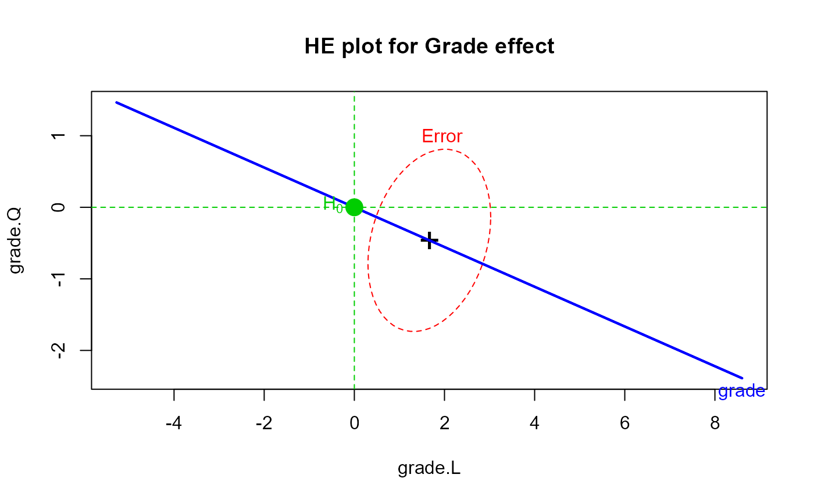
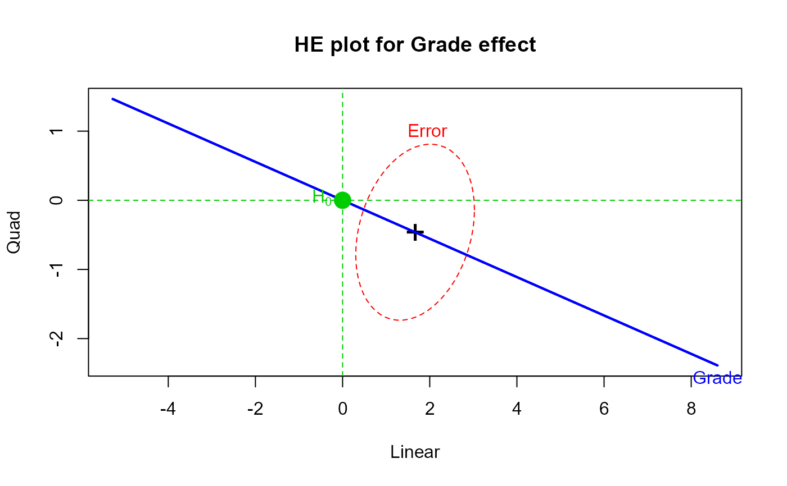

VocabGrowth.RdData from the Laboratory School of the University of Chicago. They consist of scores from a cohort of pupils in grades 8-11 on the vocabulary section of the Cooperative Reading Test. The scores are scaled to a common, but arbitrary origin and unit of measurement, so as to be comparable over the four grades.
data(VocabGrowth)A data frame with 64 observations on the following 4 variables.
grade8Grade 8 vocabulary score
grade9Grade 9 vocabulary score
grade10Grade 10 vocabulary score
grade11Grade 11 vocabulary score
Since these data cover an age range in which physical growth is beginning to decelerate, it is of interest whether a similar effect occurs in the acquisition of new vocabulary.
R.D. Bock, Multivariate statistical methods in behavioral research, McGraw-Hill, New York, 1975, pp453.
Friendly, Michael (2010). HE Plots for Repeated Measures Designs. Journal of Statistical Software, 37(4), 1-40. doi:10.18637/jss.v037.i04 .
Keesling, J.W., Bock, R.D. et al, "The Laboratory School study of vocabulary growth", University of Chicago, 1975.
data(VocabGrowth)
# Standard Multivariate & Univariate repeated measures analysis
Vocab.mod <- lm(cbind(grade8,grade9,grade10,grade11) ~ 1, data=VocabGrowth)
idata <-data.frame(grade=ordered(8:11))
Anova(Vocab.mod, idata=idata, idesign=~grade, type="III")
#>
#> Type III Repeated Measures MANOVA Tests: Pillai test statistic
#> Df test stat approx F num Df den Df Pr(>F)
#> (Intercept) 1 0.65289 118.498 1 63 4.115e-16 ***
#> grade 1 0.82578 96.376 3 61 < 2.2e-16 ***
#> ---
#> Signif. codes: 0 '***' 0.001 '**' 0.01 '*' 0.05 '.' 0.1 ' ' 1
##Type III Repeated Measures MANOVA Tests: Pillai test statistic
## Df test stat approx F num Df den Df Pr(>F)
##(Intercept) 1 0.653 118.498 1 63 4.115e-16 ***
##grade 1 0.826 96.376 3 61 < 2.2e-16 ***
heplot(Vocab.mod, type="III", idata=idata, idesign=~grade, iterm="grade",
main="HE plot for Grade effect")

### doing this 'manually' by explicitly transforming Y -> Y M
# calculate Y M, using polynomial contrasts
trends <- as.matrix(VocabGrowth) %*% poly(8:11, degree=3)
colnames(trends)<- c("Linear", "Quad", "Cubic")
# test all trend means = 0 == Grade effect
within.mod <- lm(trends ~ 1)
Manova(within.mod)
#> Note: model has only an intercept; equivalent type-III tests substituted.
#>
#> Type III MANOVA Tests: Pillai test statistic
#> Df test stat approx F num Df den Df Pr(>F)
#> (Intercept) 1 0.82578 96.376 3 61 < 2.2e-16 ***
#> ---
#> Signif. codes: 0 '***' 0.001 '**' 0.01 '*' 0.05 '.' 0.1 ' ' 1
heplot(within.mod, terms="(Intercept)", col=c("red", "blue"), type="3",
term.labels="Grade",
main="HE plot for Grade effect")
mark.H0()
